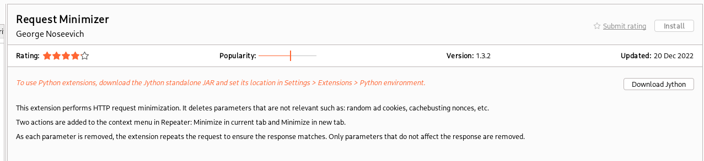
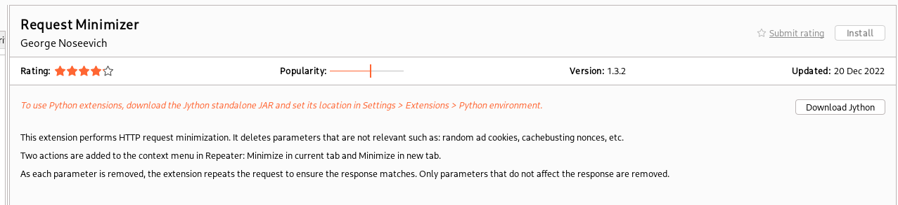

How to install extensions
As you can se below, to use certain extensions from Burp suite you must install Jython - which you don't have to know what it is - but it is very simple to set up.
As you can se below, to use certain extensions from Burp suite you must install Jython - which you don't have to know what it is - but it is very simple to set up.
